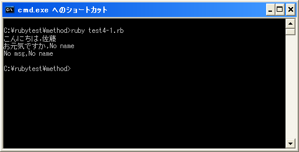

引数のデフォルト値
通常引数は呼び出し側とメソッド定義側で数が一致している必要がありますが、メソッド定義側では引数にデフォルト値を設定することが可能です。書式は次の通りです。
def メソッド名(変数1=デフォルト値1, 変数2=デフォルト値2, ...) 実行する処理 実行する処理 end
メソッドを呼び出した時に指定した引数は、メソッド側で先頭から順に代入されていきます。この時、代入するオブジェクトが無かった場合(呼び出し側で指定した引数の数が、メソッド定義側で指定した引数よりも少なかった場合)、デフォルト値が設定されていればその値が代わりに代入されます。
具体的には次のように記述します。
def printHello(msg="No msg", name="No name")
print(msg + "," + name + "¥n")
end
printHello("Hello", "Yamada")
printHello("Hello")
printHello()
今回のサンプルではメソッド呼び出しを3通りの方法で行っています。最初の呼び出しでは引数に2つのオブジェクトを指定していますが、メソッド側で受け取る引数も2つですのでデフォルト値は使用されず渡されてきたオブジェクトが順に変数に代入されます。
2番目の呼び出しでは引数に1つのオブジェクトを指定しています。メソッド側ではまず渡されてきた1つのオブジェクトを最初の変数に代入します。2つ目の変数には代入するオブジェクトが渡されてきていませんのでデフォルト値である「No name」が代わりに代入されます。
3番目の呼び出しでは引数を指定せずにメソッドを呼び出しています。メソッド側では1番目の変数にデフォルト値である「No msg」を代入し、2番目の変数にデフォルト値である「No name」を代入します。
またデフォルト値を指定する場合、全ての引数に対して指定する必要はありません。よって次のような記述も可能です。
def printHello(msg, name="No name")
print(msg + "," + name + "¥n")
end
printHello("Hello", "Yamada")
printHello("Hello")
上記の場合、1番目の引数はデフォルト値が設定されていませんので、少なくとも1つの引数を指定してメソッドを呼び出さなければエラーとなります。
またデフォルト値を指定する場合、いずれかの引数にデフォルト値を設定した時には、それ以降の引数には全てデフォルト値を設定しなければなりません。よって下記のように記述するとエラーとなります。
def printHello(msg="No msg", name) print(msg + "," + name + "¥n") end
上記のように1番目の引数にデフォルト値を設定したのであれば、2番目の引数にも必ずデフォルト値が必要です。
サンプルプログラム
では簡単なプログラムで確認して見ます。
#! ruby -Ku
require "kconv"
def printHello(msg="No msg", name="No name")
print(Kconv.tosjis(msg + "," + name + "¥n"))
end
printHello("こんにちは", "佐藤")
printHello("お元気ですか")
printHello()
上記のプログラムを「test4-1.rb」として保存します。文字コードはUTF-8です。そして下記のように実行して下さい。

( Written by Tatsuo Ikura )

著者 / TATSUO IKURA
初心者～中級者の方を対象としたプログラミング方法や開発環境の構築の解説を行うサイトの運営を行っています。